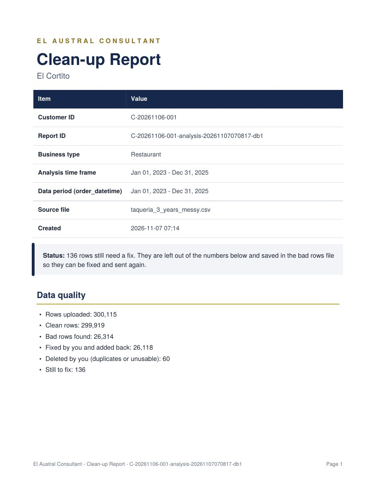
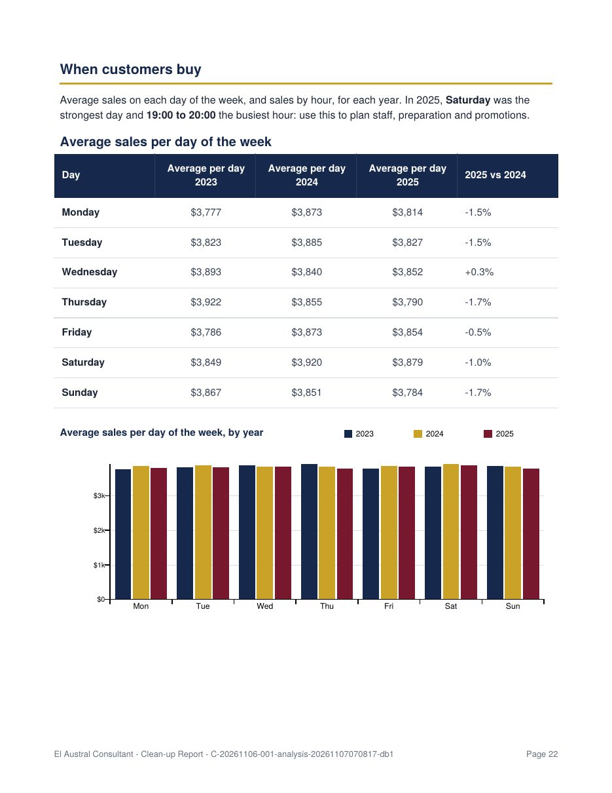
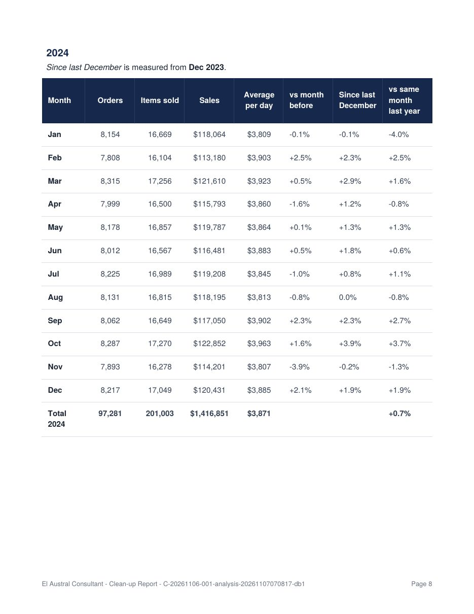
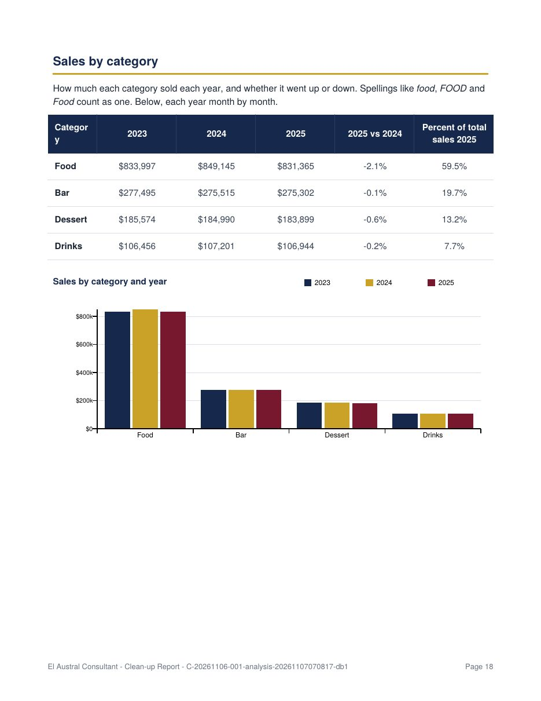
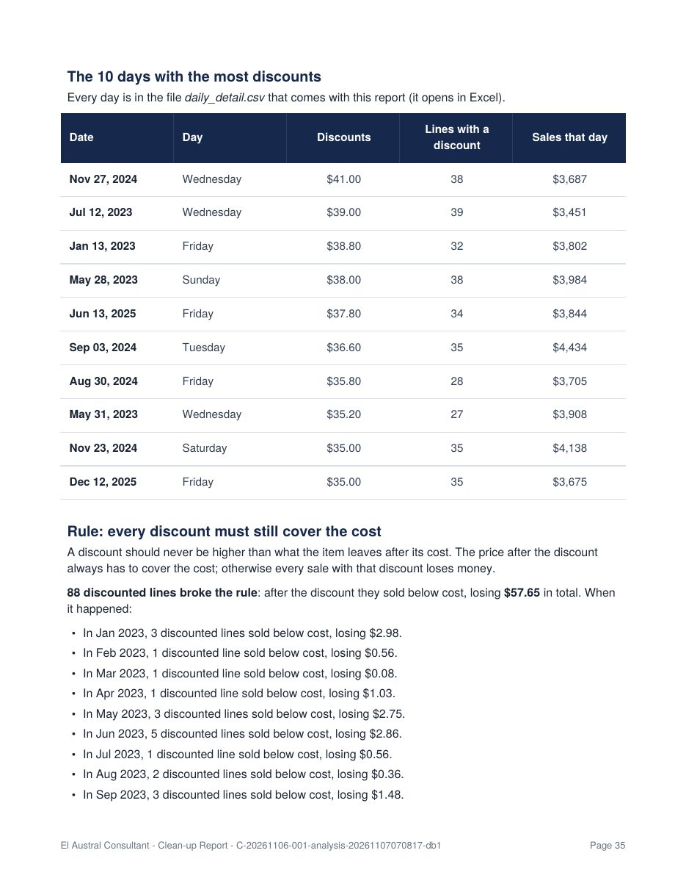
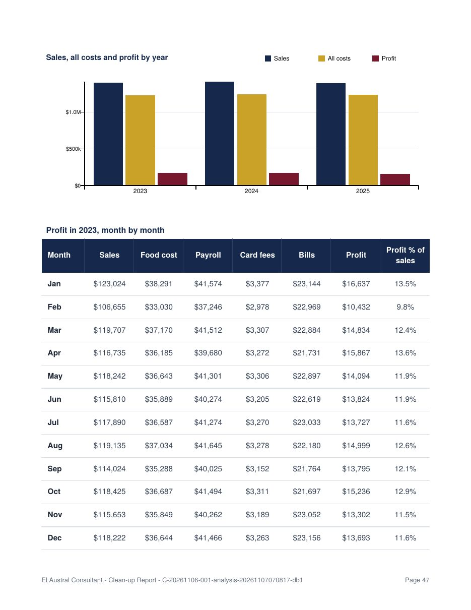
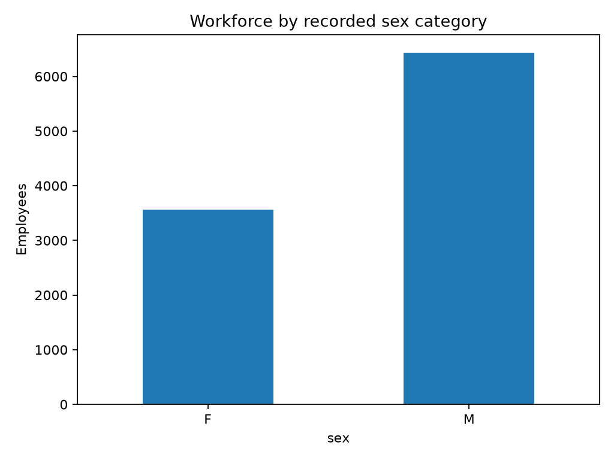
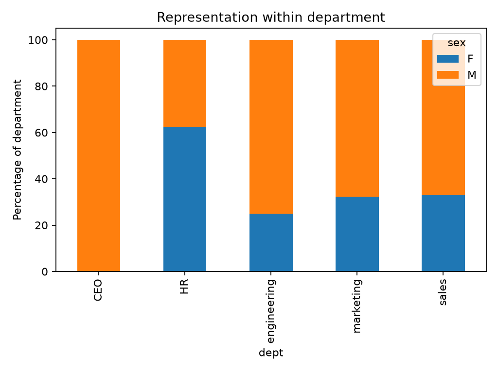
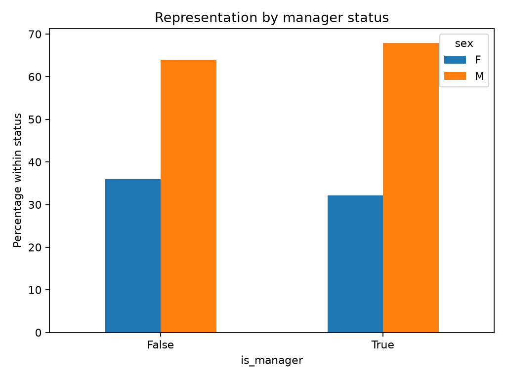
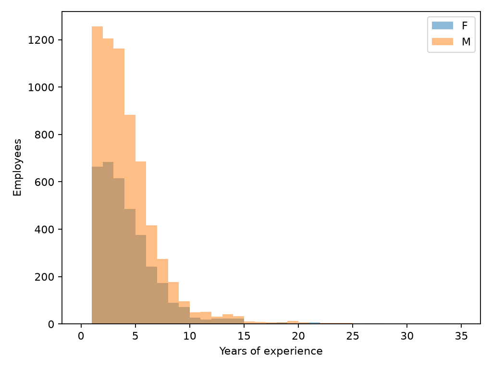

Nuestros Servicios
Leyendo lo que los datos realmente tienen que decir.
“Si algo no está bien, díganoslo. Lo arreglaremos y seguiremos ganándonos su confianza.” — El Austral Consultant
Ejemplos de nuestro trabajo analítico
Ejemplos visuales de proyectos de análisis terminados.
Lo que usted recibe: un informe de muestra
Estas páginas son de un informe completo de limpieza y análisis de El Austral Consultant, hecho con datos de prueba de un restaurante de muestra (no es un cliente real). Su informe muestra sus propios números, cada año por separado, mes por mes, explicados en lenguaje sencillo. Haga clic en una página para verla más grande. (El informe de muestra está en inglés.)

Calidad de los datos: qué se encontró y se corrigió
Cuándo compran los clientes: los mejores días, año por año
Cada mes: sube o baja, desde el último diciembre
Ventas por categoría, por año
Descuentos que vendieron por debajo del costo, con fechas
Ganancia por año y por mesVer el informe de muestra completo (PDF, en inglés)



